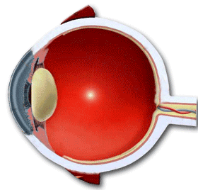

Akashic Records Revelations - Relevation 1
All what is created hides enigmas that escape to our rational
perceptions. The sciences and philosophies move towards a wider and deeper
comprehension of countless mysteries not revealed yet.
The Akashic
Records give us wisdom and the
impact of its use makes us change paradigms, and we cannot return to states of
conscience when we ignored what now they give us.
The Akashic
records provide us the
knowledge in the moment we need it and when we are prepared to incorporate it.
In this section of REVELATIONS we give a teaching periodically that, undoubtedly, if we use it, will change our existence towards a state of more conscience and wisdom.
|
In the centre of each human eyeball there is an
energy that you can "visualise" like a marble of 2 or 3 mm
(displaced 2 mm from the centre of the eye forwards, see figure).
Figure of the human eyeball
 There is a portion of Divine conscience in it, presence of Christ, memory of paradise and state of conscience of spiritual awakening, alchemy gold. If we project the conscience alternatively to the marble of an
eye and then to the marble of the other eye, with exactly programmed
times, we send a coded message to the cosmos (like the Morse
language), so that it sends us help to modify a situation. A sensorial checking of being performing this visual meditation in the correct way is a great sensation of interior peace. If you want to eliminate mental parasites and to close fissures in your aura layers, you will have to use the following frequency, beginning with the right eye and repeating it at least seven times. The best way of counting the times exactly is taking your own beats as measure. You should be in meditative attitude, take your own pulse and when you have located it and you can start counting, you place your conscience in the sacred little sphere / Celestial little sphere (esferita Crística) of the right eye and you begin to count. You keep the attention during 8 beats. Then you pass to the left eye and count 6 beats. You go back to the right eye and remain there for 12 beats. You go to the left eye and count only one beat. You go to the right eye and remain for 18 beats. On your left eye you count 30 beats. You return to your right eye, 20 beats. You go to the left, 20 beats and you start again. It is ideal to practise this just before sleeping, once you are lying on your bed, as method of cleaning the remains of the day. If you perform this twice a day for 3 months you will carry out not only a support action but also a healing action.
You are performing an action revealed by the
Akashic Records in the year 2006, unknown until |
Source: http://www.akashicosonline.com/ingles/revelaciones.html